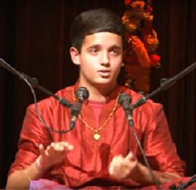
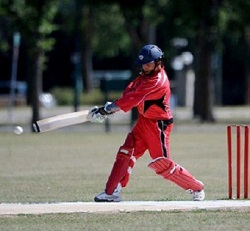

|
|
|
|
|
|
Welcome to my website. My name is Rohan Devraj, I will be completing my undergrad at the University of Waterloo this April 2020 concentrating
on Computer Science and Mathematics. I'm actively seeking new-grad job opportunities starting summer 2020. I have a unique passion towards
learning new technologies and enhancing my skillset to gain a competitive edge. Outside of my career and studies,
I play Cricket and Soccer at a competitive level, and I am also a trained vocal artist in the field of Indian Classical Carnatic Music.
Thanks for stopping by and feel free to get in touch with me for collaboration, job, and/or other opportunities!
| Languages [Proficient] : | Python, C, HTML, CSS, R, Scheme, SQL |
| Languages [Familiar] : | VBA, Javascript, Java, XML |
| Frameworks/Tools : | Spark, Hadoop, Pandas, BeautifulSoup, Scikit-learn, Scipy, jQuery, Bootstrap, Jupyter Notebooks, Visual Studio, Appian |
| Analytical Tools : | Datameer, DataIKU, Norkom, Netezza, Workfusion, Spotfire, SAS |
These projects I've developed are a combination of both individual and team works.
| Bank of Montreal (BMO) - Developer Analyst - 2019 |
| TELUS - Application Developer - 2017 |
| O2E Brands - Data Architect - 2016 |
| Vancity Credit Union - Data Specialist - 2016 |
- University of Waterloo: Computer Science Club, Data Science Club, AppDev Club,
Varsity Waterloo Cricket team, Competitve Soccer/Futsal Intramurals

- Outside of school, my interests range from performing arts to competitive sports. Since a very young age,
I have always found myself taking pride and a deep interest in having to balance my academics, music, and sports constantly.
I was introduced to the vocal art, Carnatic Music , a branch of Indian Classical Music at the tender age of four.
Over the past 16 years, I have performed in several local community events in British Columbia while learning from the
Vancouver Sangeethopasana Music academy in Vancouver. I gave my graduation concert in October 2014, which featured a 3 hour solo performance,
where I showcased my vocal talents alongside very experienced percussionists on stage. Carnatic Music remains to be a very pivotal part of my life as I continue
practice the art, give more performances and give back by teaching the art to young students as well as helping to promote academy events.

- I was inspired to play Cricket watching professional players on TV, and from my father and brother. I started playing Cricket since the age of 3,
and moved on to play competitive cricket from the age of 8. I have been fortunate enough, to represent the British Columbia U17, U18, and U19 Provincial Cricket teams while being a Vice-Captain or Captain for many tournaments. I have also represented the Canadian National
U15 Team. Additionally I've represented the University of Waterloo Varsity Cricket team throughout my undergrad. Cricket has been an important part of my life, whether I watch it or play.
I hope to remain passionate in all of my extracurriculars for many years to come, while balancing a steady career.
- Brainstation Data Science Course Certification - August 2018
- University of Waterloo - President's Scholarship - May 2015
- Principal's List - Golden Cord (Academic Excellence) - June 2015
- Indian Classical Music graduation - Carnatic Music - October 2014
- Vancouver District Scholarship Award - June 2015
For excellence in Physical education and in academics.
- Yaletown Lions Club Scholarship - June 2015
For excellence in academics, and for exemplifying leadership qualities within the Vancouver
Downtown Communities.
- KR Society for Arts and Sciences Scholarship - May 2015
For excellence in academics and Fine Arts(music).
- International Baccalaureate Middle Years Programme Fair - 2nd place Silver Medallist - April 2013
- Duke of Edinburgh Bronze Award - June 2013
- Cricket Canada U15 National team representative (player) - August 2011
- British Columbia U17, U18, U19 Cricket teams representative (player) - 2011 - 2016
Rohan Devraj Website: rdevraj97.github.io Phone: 778-837-3437 Email: rdevraj97@gmail.com LinkedIN: https://ca.linkedin.com/in/rohandevraj Github: https://github.com/rdevraj97
|
|
|